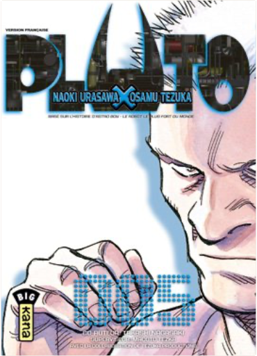
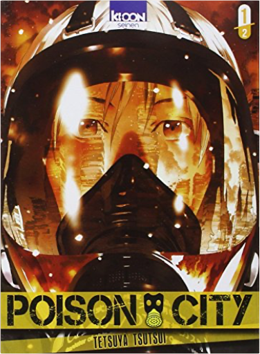
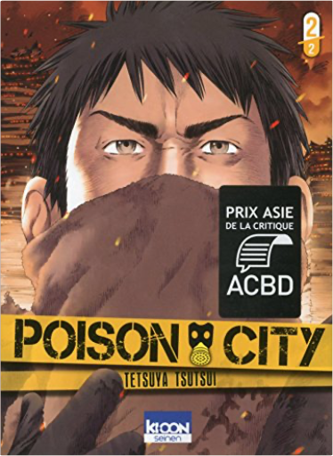

Books
Movies
Albums
Videogames
Games
BD
BD Camille
Blu-ray
Business
Camille
Comics
Cooking
Lego
Manga
Pauline
Photography
Star Wars
Travel
TV Shows
Un livre dont vous êtes le héro
Vinyl
Walt Disney
5
6
7
8
9

pluto, tome 5
naoki urasawa, osamu tezuka
5
pluto, tome 6
naoki urasawa, osamu tezuka
pluto, tome 7
naoki urasawa, osamu tezuka
pluto, tome 8
naoki urasawa, osamu tezuka

poison city, tome 1
tetsuya tsutsui

poison city, tome 2
tetsuya tsutsui
tsubasa reservoir chronicle, tome 1
clamp
5
5
6
7
8
9


 Made with Delicious Library Made with Delicious Library
Made with Delicious Library Made with Delicious Library